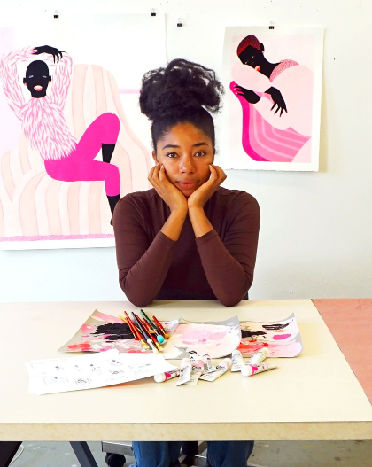
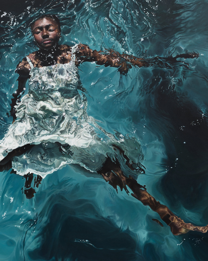
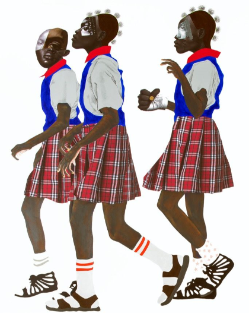
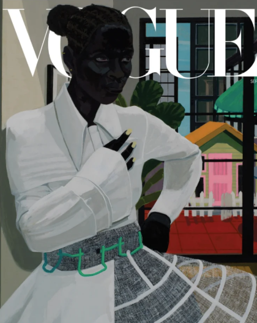
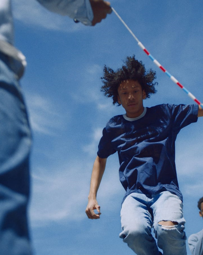

HIGHLIGHTS
Clifford Prince King photographs the highs
and lows of Black male desire

Grace Lynne Haynes Is The 27-Year-Old Painter
Behind Your Favorite 'New Yorker' Covers

How Three Artists Are Exploring
Mythology and Race

Deborah Roberts’s Gripping Collages
Reconfigure Black Girlhood

Vogue Enlists Black Artists Kerry James
Marshall and Jordan Casteel

Photographer Tyler Mitchell captures the joys
of being young and Black in America
The Star of TIFF 2020 Isn’t On Screen:
Meet Sasha Leigh Henry

Designer Duro Olowu Brings His Maximalist
Sensibility and Cosmopolitan Eye to Chicago
Museum Show
Ufuoma Essi is an artist working with found
footage to explore Black feminist epistemology